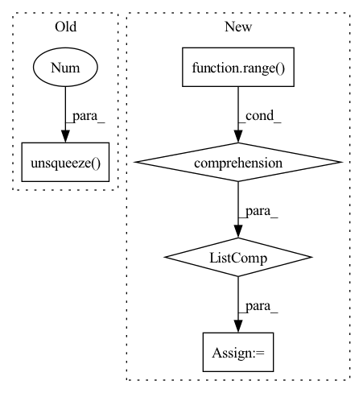

Pattern ID :280
Before Change
// master_state = self.W_master_in(self.act_func(nei_message.sum(dim=0))) //try something like this to preserve invariance for master node
// master_state = self.GRU_master(nei_message.unsqueeze(1))
// master_state = master_state[-1].squeeze(0) //this actually doesn"t preserve order invariance anymore
master_state = self.act_func(self.W_master_in(nei_message.sum(dim=0))).unsqueeze(0 )
message = self.act_func(binput + nei_message + self.W_master_out(master_state).repeat((nei_message.size(0), 1)))
message = self.layer_norm(message)
else:
message = self.act_func(binput + nei_message)After Change
for start, size in bscope:
mol_vec = nei_message.narrow(0, start, size)
mol_vec = mol_vec.sum(dim=0) / size
mol_vecs += [mol_vec for _ in range(size)]
master_state = self.act_func(self.W_master_in(torch.stack(mol_vecs, dim=0))) // (num_bonds, hidden_size)
message = self.act_func(binput + nei_message + self.W_master_out(master_state))
// message = self.layer_norm(message)
else:In pattern: SUPERPATTERN
Frequency: 3
Non-data size: 5
Instances Fragment ID: 939430
Project Name: aamini/chemprop
Commit Name: 9cce90e26bd82213412ec7fcb72225feb3cc0b15
Time: 2018-10-04
Author: yangk@mit.edu
File Name: mpn.py
M Class Name: MPN
N Class Name: MPN
M Method Name: forward(2)
N Method Name: forward(2)
M Parent Class: nn.Module
N Parent Class: nn.Module
M File Name: mpn.py
N File Name: mpn.py
M Start Line: 373
M End Line: 380
N Start Line: 355
N End Line: 389
Before Change
batch, city_t, xy = x.size()
embed_enc_inputs = self.Embedding(x)
enc_h, (h, c) = self.Encoder(embed_enc_inputs, None)
dec_input = self.dec_input.unsqueeze(0).repeat(batch,1).unsqueeze(1 ) .to(device)
for i in range(city_t):
_, (h, c) = self.Decoder(dec_input, (h, c))
query, ref = h.squeeze(0), enc_hAfter Change
enc_h, (h, c) = self.Encoder(embed_enc_inputs, None)
ref = enc_h
query = h.permute(1,0,2).to(device)// query = self.dec_input.unsqueeze(0).repeat(batch,1).unsqueeze(1).to(device)
process_h, process_c = [torch.zeros((1, batch, embed), device = device) for _ in range(2)]
for i in range(self.n_process):
query, (process_h, process_c) = self.Decoder(query, (process_h, process_c))
query = query.squeeze(1)
for i in range(self.n_glimpse): Fragment ID: 939428
Project Name: rintarooo/tsp_drl_ptrnet
Commit Name: ab78416ee96de7b4b780b38a77f4956518afa19c
Time: 2020-11-12
Author: 310rnomeado@gmail.com
File Name: critic.py
M Class Name: PtrNet2
N Class Name: PtrNet2
M Method Name: forward(3)
N Method Name: forward(3)
M Parent Class: nn.Module
N Parent Class: nn.Module
M File Name: critic.py
N File Name: critic.py
M Start Line: 35
M End Line: 38
N Start Line: 40
N End Line: 51
Before Change
if self.proj is not None and self.pre_proj:
x = self.proj(x)
x = x.mean(-2) / x_len.float().unsqueeze(-1 )
if self.proj is not None and not self.pre_proj:
x = self.proj(x)
After Change
x = self.pre_proj(x)
if x_len is not None:
x = [x[b, : x_len[b]].mean(0) for b in range(len(x))]
x = torch.stack(x, dim=0)
else:
x = x.mean(1)
Fragment ID: 939426
Project Name: atosystem/speechclip
Commit Name: b2d7d1450922b5f68626bcc7751faf4feca14ed5
Time: 2022-03-19
Author: b06901020@ntu.edu.tw
File Name: avssl/module/pooling.py
M Class Name: MeanPoolingLayer
N Class Name: MeanPoolingLayer
M Method Name: forward(3)
N Method Name: forward(3)
M Parent Class: nn.Module
N Parent Class: nn.Module
M File Name: avssl/module/pooling.py
N File Name: avssl/module/pooling.py
M Start Line: 22
M End Line: 28
N Start Line: 46
N End Line: 58